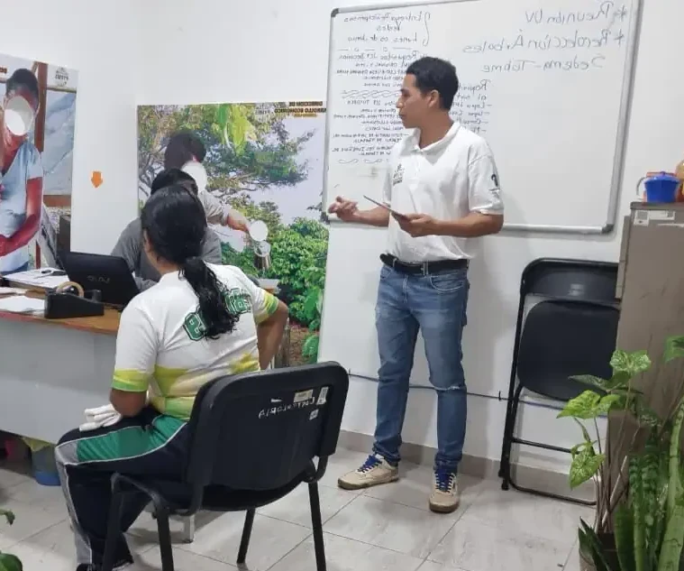

Importancia del Enfoque Biológico en la Asesoría
Como biólogo con experiencia en sustentabilidad, ofrezco servicios profesionales integrales que abarcan la planificación, proyección, gestión y ejecución de proyectos. Elaboro memorias técnicas detalladas, realizo cálculos precisos para la gestión eficiente de residuos orgánicos y sistemas de captación de agua pluvial, además de diseñar e implementar viveros de hortalizas, programas de reforestación con especies nativas y proyectos de paisajismo funcional y estético para diversos entornos.